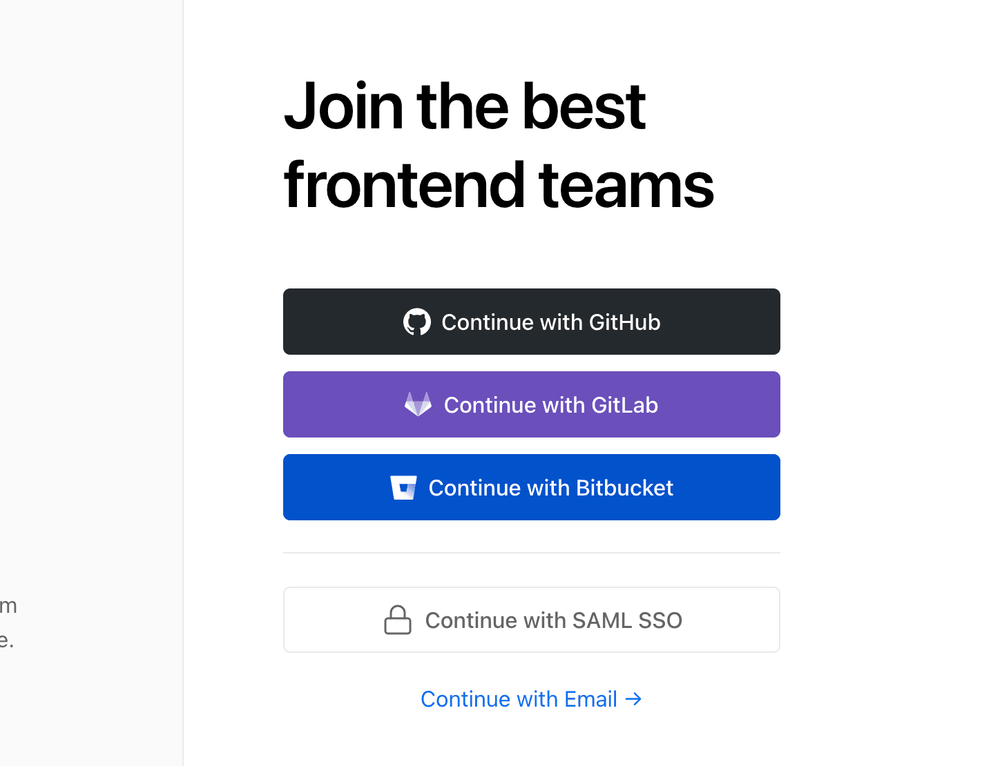
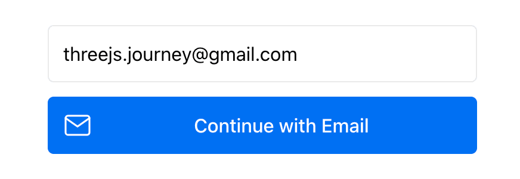
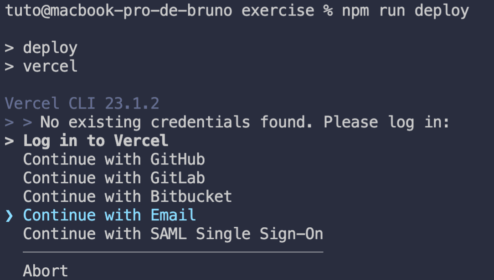
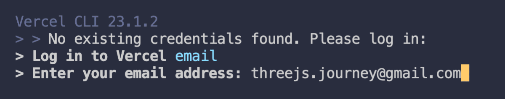
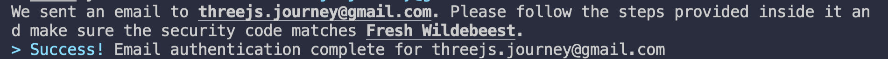
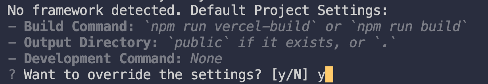
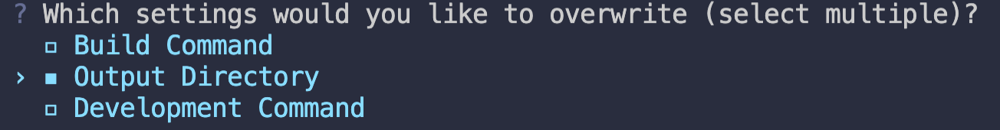
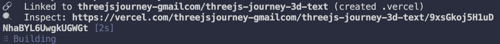
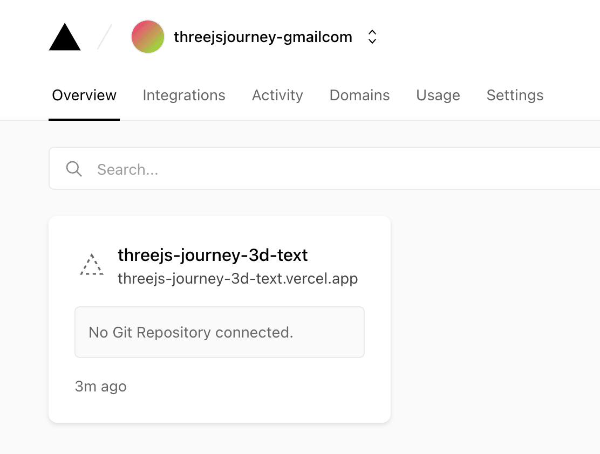
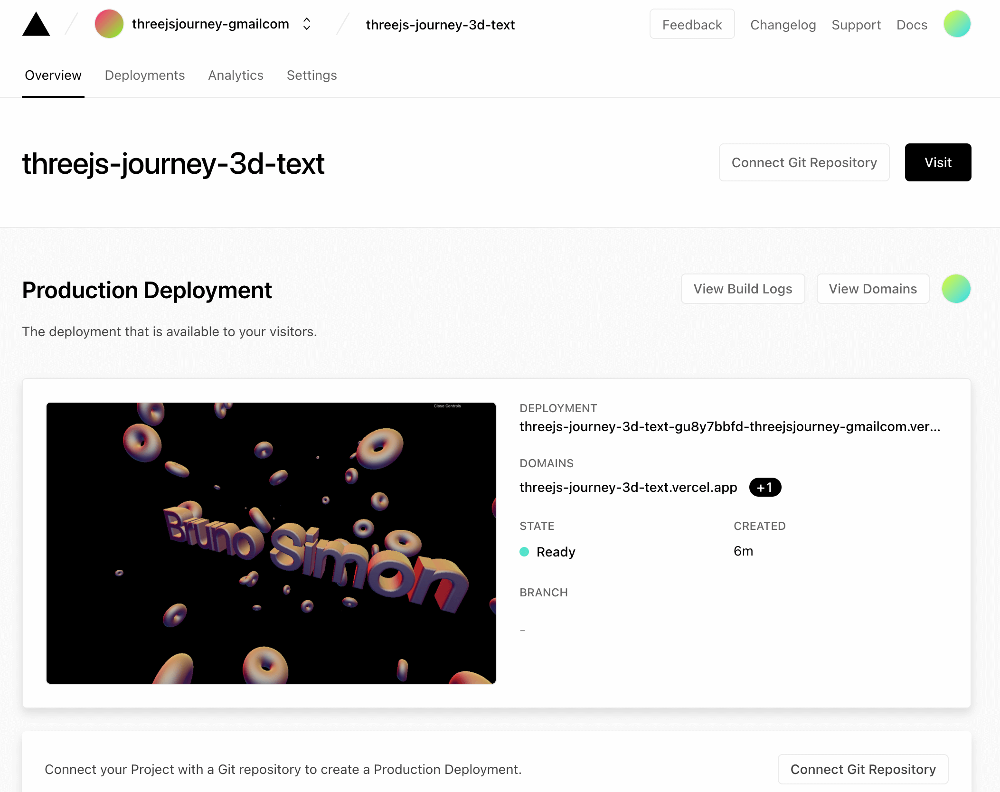

Introduction
At this point in your journey, you might want to share what you've built. A screenshot or a video is a good start, but your friends and family will enjoy an interactive version much more. It's time to make those WebGL experiences live.
Solutions
Years ago, we didn't have that many solutions to make a website live. Today, it's a bit more complicated, but we also have access to many handy solutions.
Traditional build
In the next section, we are going to use a solution that doesn't require you to subscribe to a "traditional" hosting solution like OVH, 1and1 or Gandhi where you have to upload files manually by using an FTP client. Some of you, however, might already have a host like one of these and you just want to get those files that you are supposed to upload.
You can't simply put the whole project with the node_modules folder and the webpack configuration on the host. First, you need to "build" your project within that webpack configuration in order to create HTML, CSS, JS and assets files that can be interpreted by browsers.
To build your project, run npm run build in the terminal.
This command will run the script located in the /package.json file in the scripts > build property.
Wait a few seconds and the files should be available in the /dist/ folder which will be created when build is executed. You can then put those files online using your favorite FTP client.
Whenever you want to upload a new version, run npm run build again even if the /dist/ folder already exists.
We are not going to cover the setup of one of those "traditional" hosting solutions because we are going to use a more appropriate solution in the next section.
Vercel
Vercel is one of those "modern" hosting solutions and features continuous integration (automatisation of testing, deployment and others development steps like this). It is very developer friendly and easy to setup.
You can use it for complex projects, but also for very simple "single page" websites like the ones we create within this course.
Before continuing, be aware that there is no partnership between me (Bruno Simon) and Vercel. I just like to use it for my small creative experiences.
Also, there are other good alternatives that we should mention like Netlify and GitHub Pages.
Be aware also that you might see slight differences between the rest of this lesson and your own experience with Vercel. It's quite a new solution and the developers keep improving the service.
Create an account
First, go to vercel.com and create an account.
You can choose between different login methods such as GitHub connect, GitLab connect, Bitbucket connect or classic Email access.

The "connect" choices might be good options because one of the great features of Vercel is that it allows continuous integration as a versioning solution. If you don't know what GitHub, GitLab and Bitbucket are, they are hosting solutions for your Git repositories. In other words, it's where most developers save their code.
If you are familiar with them, you can totally go for it. This will simplify the process and Vercel will automatically fetch your repository, help you setup the live version and automatically update it when you push new versions on the repository. You can even choose a specific branch.
For those of you who are not familiar with Git hosting solutions, don't worry, we are going to keep this lesson accessible to most students and choose the Email solution. Even if you are currently using Git, this solution will still work fine. Click the Email link:
Then enter your email address and follow the steps to create your account:

Vercel will send you an email confirmation with a link so that you can log in. Once you've clicked on that link, you should be connected.
Add Vercel to your project
Vercel is available as an NPM module that you can install globally on your computer or as a dependency on your project. We are going to add it to the project so that, if we want to setup the project on another computer or we want to share it with another developer, we don't have to install anything on that computer.
In the terminal of your project, run npm install vercel. After a short while, the installation will be complete, but you will probably notice that there are some vulnerabilities. The terminal will instruct you to run an audit to fix them. You can usually ignore these warnings since they are probably false positives.
Although we added Vercel as a project dependency, instead of globally, it's still not available in the terminal. Your NPM scripts will have access to it, but you will first need to make the following change.
In package.json, in the "scripts" property, add a new script named "deploy" and write "vercel --prod" as the value (don't forget the , after the "dev" script):
If you use the "vercel" command without —-prod, the code will be published on a preview URL so that you can test it before going to production. Though it is an interesting feature, we don't need a preview version.
From now on, if you want to deploy your project online, you can simply run npm run deploy in the terminal.
Deploy for the first time
The first time you want to deploy your project, Vercel will ask you for some information in order to connect to your account and setup the project.
In the terminal, run npm run deploy
If earlier, you chose to connect with an email, use the up and down arrows to select Continue with Email and press Enter:

Then write your email:

Vercel will send you an email like earlier. Click on the link available in that email and the terminal should automatically continue to the next step:

At this point, you should be prompt with a confirmation to setup and deploy the current folder. Choose Y and press Enter:
You can have multiple scopes and teams associated with your account. If you've just created your account, there should be only one. Choose it by pressing Enter:

In our case, we are creating a new project and we don't want to associate our code with an existing project. Write n and press Enter:
Vercel will try to guess the project name, but you can change it to anything you want. You can use lower case, numbers and dashes. Press Enter:
If you are executing that code at the root of the project folder, you can keep ./ and press Enter:

Vercel has default settings for things like the build command or the bundle destination folder. We need to override those. Write y and press Enter:

Vercel's default Build Command is npm run build and it's the same for us. But Vercel's default Output Directory is public while ours is dist.
Use the up and down arrows to move the cursor on Output Directory and press Space to check it. Then, press Enter to go to the next step:

Write dist and press Enter:
That's it, your website should start deploying on Vercel.

Wait a minute or two and Vercel should prompt you with the URL to the live version.

Vercel should automatically copy that URL to your clipboard. You can paste it into your favorite browser and test the live version.
Further settings
Go to vercel.com and make sure you are logged in.
You should have access to your dashboard and see your project:

Click on your project. This is the screen you should see next:

Here, you can see a preview of your project, get information about the latest builds, change deployment preferences, see potential errors, etc.
You can even add a custom domain, but we won't cover that in this lesson.
Pricing
But wait, is everything free?
Yes and no. If you just want to share those cool WebGL experiences you're building with the world with no commercial intent, the free plan (named Hobby) should be more than enough. You can create as many projects as you want with all the features we just saw.
But if you have commercial intents, or want to use specific features like teams, password protections for the preview, firewalls, etc., you might need to use a paid plan.
Also, the Hobby plan has bandwidth and build time limitations. This means that if your website gets a lot of attention or you deploy too many times, you'll have to switch to a paid plan.
Plans and pricing can be find here: vercel.com/pricing
Share!
No excuse now. Share your work with the world and don't forget to use the #threejsJourney hashtag on Twitter.